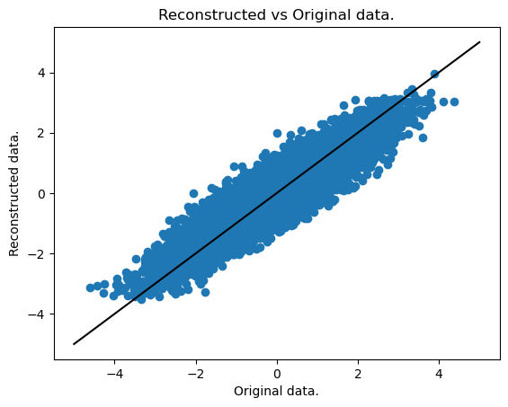
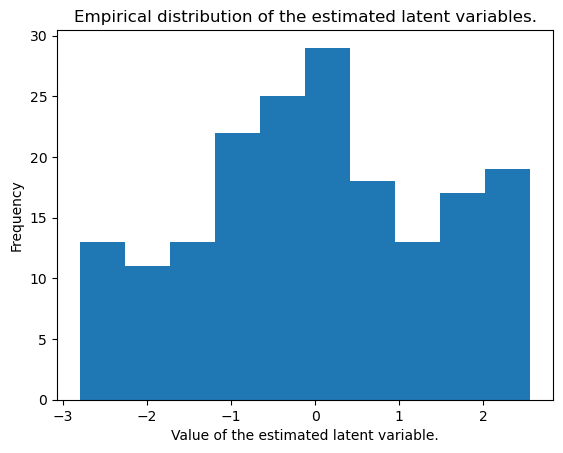
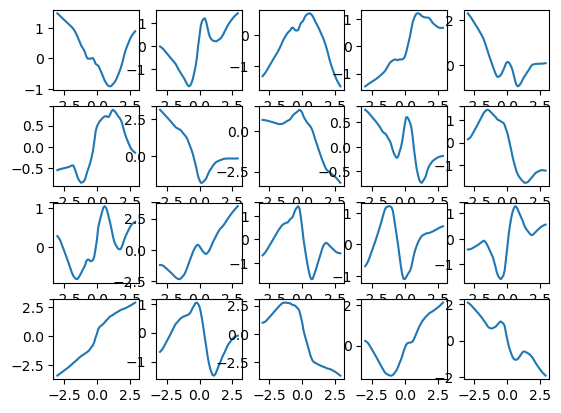

import matplotlib.pyplot as plt
import numpy as np
import pandas as pd
import tensorflow as tf
from tensorflow import keras
from tensorflow.keras import layersThis is variational auto-encoder (VAE) implementation using tensorflow of the following non-linear latent variable model with one latent variable:
\[\begin{align*} Z &\sim N(0, 1)\\ X_j | Z &= g_j(Z) + \epsilon_j\\ \epsilon_j &\sim N(0, \sigma_j^2), \quad j=1, \dots, p \end{align*}\]
This model can be likened to a non-linar factor analysis model, or, with the assumption that \(\sigma_j = \sigma \quad \forall j\), to a one-dimensional non-linear probabilistic principal component analysis (PPCA) model.
Given some observed data \(\{X^{(i)}\}_{i=1}^n\) with \(X^{(i)} \in \mathbb R^p\), the goal is to estimate the functions \(g_j: \mathbb R \to \mathbb R\).
Load data
We load a toy dataset with dimensions \(n=100, p=100\).
data = pd.read_csv("./data/q1/data_1_200_100_1.csv")
data = np.array(data, dtype='float32')
data = np.expand_dims(data, axis=-1)
data_train = data[:int(data.shape[0]*.9)]
data_test = data[int(data.shape[0]*.9):]data_train.shape(180, 100, 1)Create the sampling layer
class Sampling(layers.Layer):
"""Uses (z_mean, z_log_var) to sample z, the vector encoding a digit."""
def call(self, inputs):
z_mean, z_log_var = inputs
batch = tf.shape(z_mean)[0]
dim = tf.shape(z_mean)[1]
epsilon = tf.keras.backend.random_normal(shape=(batch, dim))
return z_mean + tf.exp(0.5 * z_log_var) * epsilonCreate the encoder
The encoder encodes the observed variables into the parameters of the posterior distribution of \(Z^{(i)}|Y^{(i)}\). Both the mean and variance share the first layer.
latent_dim = 1
encoder_inputs = keras.Input(shape=data_train.shape[1:])
x = layers.Flatten()(encoder_inputs)
x = layers.Dense(100, activation="relu")(x)
z_mean = layers.Dense(100, activation="relu")(x)
z_mean = layers.Dense(100, activation="relu")(x)
z_mean =layers.Dense(latent_dim, name="z_mean", activation="linear")(z_mean)
z_log_var = layers.Dense(100, activation="relu")(x)
z_log_var = layers.Dense(100, activation="relu")(x)
z_log_var = layers.Dense(latent_dim, name="z_log_var", activation="linear")(z_log_var)
z = Sampling()([z_mean, z_log_var])
encoder = keras.Model(encoder_inputs, [z_mean, z_log_var, z], name="encoder")
encoder.summary()Model: "encoder"
__________________________________________________________________________________________________
Layer (type) Output Shape Param # Connected to
==================================================================================================
input_1 (InputLayer) [(None, 100, 1)] 0 []
flatten (Flatten) (None, 100) 0 ['input_1[0][0]']
dense (Dense) (None, 100) 10100 ['flatten[0][0]']
dense_2 (Dense) (None, 100) 10100 ['dense[0][0]']
dense_4 (Dense) (None, 100) 10100 ['dense[0][0]']
z_mean (Dense) (None, 1) 101 ['dense_2[0][0]']
z_log_var (Dense) (None, 1) 101 ['dense_4[0][0]']
sampling (Sampling) (None, 1) 0 ['z_mean[0][0]',
'z_log_var[0][0]']
==================================================================================================
Total params: 30,502
Trainable params: 30,502
Non-trainable params: 0
__________________________________________________________________________________________________Create the Decoder
The decoder has to be flexible enough to be able to model the functions \(g_j\), which models the conditional means of the responses. On top of that, the decoder models the residual variances \(\sigma_j\).
latent_inputs = keras.Input(shape=(latent_dim,))
x = layers.Dense(50, activation="relu")(latent_inputs)
x = layers.Dense(100, activation="relu")(x)
log_var = layers.Dense(100, activation="relu")(x)
log_var = layers.Dense(100, activation="linear")(log_var)
log_var = layers.Reshape(data_train.shape[1:])(log_var)
x_output = layers.Dense(100, activation="relu")(x)
x_output = layers.Dense(100, activation="linear")(x_output)
x_output = layers.Reshape(data_train.shape[1:])(x_output)
decoder = keras.Model(latent_inputs, [x_output, log_var], name="decoder")
decoder.summary()Model: "decoder"
__________________________________________________________________________________________________
Layer (type) Output Shape Param # Connected to
==================================================================================================
input_2 (InputLayer) [(None, 1)] 0 []
dense_5 (Dense) (None, 50) 100 ['input_2[0][0]']
dense_6 (Dense) (None, 100) 5100 ['dense_5[0][0]']
dense_9 (Dense) (None, 100) 10100 ['dense_6[0][0]']
dense_7 (Dense) (None, 100) 10100 ['dense_6[0][0]']
dense_10 (Dense) (None, 100) 10100 ['dense_9[0][0]']
dense_8 (Dense) (None, 100) 10100 ['dense_7[0][0]']
reshape_1 (Reshape) (None, 100, 1) 0 ['dense_10[0][0]']
reshape (Reshape) (None, 100, 1) 0 ['dense_8[0][0]']
==================================================================================================
Total params: 45,600
Trainable params: 45,600
Non-trainable params: 0
__________________________________________________________________________________________________Create the variational autoencoder
The variational auto-encoder (VAE) is itself a keras.Model object. It consists of the encoder and decoder layers, a specialized train_step as well of some specialized metrics to keep track of our progress.
class VAE(keras.Model):
def __init__(self, encoder, decoder, **kwargs):
super().__init__(**kwargs)
self.encoder = encoder
self.decoder = decoder
self.total_loss_tracker = keras.metrics.Mean(name="total_loss")
self.reconstruction_loss_tracker = keras.metrics.Mean(
name="reconstruction_loss"
)
self.kl_loss_tracker = keras.metrics.Mean(name="kl_loss")
@property
def metrics(self):
return [
self.total_loss_tracker,
self.reconstruction_loss_tracker,
self.kl_loss_tracker,
]
def train_step(self, data):
with tf.GradientTape() as tape:
z_mean, z_log_var, z = self.encoder(data)
reconstruction, logvar = self.decoder(z)
logvar = tf.reduce_mean(logvar, axis=1, keepdims=True)
# Reconstruction loss (including the residual variances)
reconstruction_loss = 0.5 * tf.reduce_mean(tf.reduce_sum((data - reconstruction)**2 * tf.math.exp(-logvar) + logvar + tf.math.log(2. * np.pi), axis=1))
# ELBO loss, approximating the posterior with a Gaussian.
kl_loss = -0.5 * (1 + z_log_var - tf.square(z_mean) - tf.exp(z_log_var))
kl_loss = tf.reduce_mean(tf.reduce_sum(kl_loss, axis=1))
total_loss = reconstruction_loss + kl_loss
grads = tape.gradient(total_loss, self.trainable_weights)
self.optimizer.apply_gradients(zip(grads, self.trainable_weights))
self.total_loss_tracker.update_state(total_loss)
self.reconstruction_loss_tracker.update_state(reconstruction_loss)
self.kl_loss_tracker.update_state(kl_loss)
return {
"total_loss": self.total_loss_tracker.result(),
"reconstruction_loss": self.reconstruction_loss_tracker.result(),
"kl_loss": self.kl_loss_tracker.result(),
}Now Markdown
vae = VAE(encoder, decoder)
vae.compile(optimizer=keras.optimizers.Adam())
vae.fit(data_train, epochs=200)Plot
We now plot the fit, i.e. the reconstruction vs the original data.
encoded, _, _ = vae.encoder.predict(data_train)
decoded, var = vae.decoder.predict(encoded)
f, ax = plt.subplots()
ax.scatter(
data_train.reshape((np.prod(decoded.shape),)),
decoded.reshape((np.prod(decoded.shape),))
)
ax.plot([-5,5], [-5,5], 'k-')
plt.title("Reconstructed vs Original data.")
plt.xlabel("Original data.")
plt.ylabel("Reconstructed data.")
plt.show()6/6 [==============================] - 0s 3ms/step
6/6 [==============================] - 0s 2ms/step
We can also plot the estimated latent variables (the encoded data), which should approximately be standard normal random variables.
plt.hist(encoded)
plt.title("Empirical distribution of the estimated latent variables.")
plt.xlabel("Value of the estimated latent variable.")
plt.ylabel("Frequency")Text(0, 0.5, 'Frequency')
Finally, we can also plot a selection of the \(g_j\) functions.
# Define a range of values to plot
z_grid = np.arange(-3,3, .1)
z_grid = np.expand_dims(z_grid, axis=1)
# Obtain the map of these values through the estimated g_j functions
y_grid, _ = vae.decoder.predict(z_grid)
# Plot 20 of these
n = 20
plt.figure()
for i in range(n):
plt.subplot(4,int(n/4),i+1)
plt.plot(z_grid[:,-1], y_grid[:,i, -1])2/2 [==============================] - 0s 5ms/step